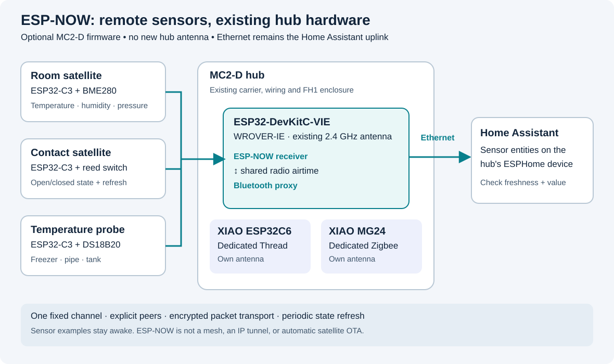

ESP-NOW sensor satellites
MC2-D can receive nearby sensor readings over ESP-NOW and publish them to Home Assistant through its existing Ethernet connection. This is an optional firmware profile for the ESP32-DevKitC-VIE / WROVER-IE already on the carrier. It does not require another hub module, a new antenna, or a change to the carrier or FH1 enclosure.
The implementation and examples live in firmware/espnow. They target the repository's pinned ESPHome 2026.10.2 / ESP-IDF 5.5.5. Compilation checks are not a range test: delivery rate, BLE coexistence, concurrent hub load and power consumption still need measurements on the assembled hardware before this becomes a dependable installation.

What changes, and what stays on its own radio
- Main WROVER-IE: receives ESP-NOW on its existing 2.4 GHz antenna while retaining the Bluetooth proxy and the hub's other functions. Ethernet remains the IP connection for Home Assistant, management and hub OTA updates.
- XIAO ESP32C6: remains the dedicated Thread radio. It is not repurposed as an ESP-NOW receiver.
- XIAO MG24: remains the Zigbee coordinator radio.
- CC1101 and ZAC93: keep their RF and Z-Wave roles. An ESP-NOW message does not automatically become a compatible RF curtain command.
The optional profile starts the ESP32 Wi-Fi radio in station mode for ESP-NOW, without joining an access point or adding a Wi-Fi IP connection. It enables software coexistence with Bluetooth. Both share radio airtime; they are not two independent receivers. This station-mode choice follows Espressif's ESP32 coexistence requirements.
Compatible satellites
Use a separate ESP32-family board with Wi-Fi and firmware implementing the same ESPHome packet transport. The provided examples target the Espressif ESP32-C3-DevKitM-1, powered through USB; classic ESP32, ESP32-S2/S3 and ESP32-C6 can be alternative satellite platforms after changing the board, pin assignments and build configuration. This is not permission to reuse the hub's occupied pins or its dedicated C6.
ESP32-H2 has no Wi-Fi radio and is not an ESP-NOW target. ESP8266 firmware, vendor ESP-NOW sensors and other projects can use different packet formats; sharing the name ESP-NOW does not make them compatible with these examples. Tuya WBR3/RTL8710 modules and RF-only curtain motors are not ESP32 satellites. See the ESPHome ESP-NOW component.
Every node needs its own appropriate power supply and antenna. For boards with an external antenna connector, connect the correct antenna before powering the radio. Do not buy more hub antennas for this feature: satellites have their own radio hardware, while the hub reuses its WROVER-IE antenna.
Build and commission
Start with one powered satellite next to the hub, then test it at its final location. Keep the existing private hub configuration and a known-working firmware image before changing the hub profile.
- Use the preparation and validation commands in the ESP-NOW firmware instructions. They create a private build directory; generated test credentials and example addresses are not your deployment configuration.
- Record the hub's Wi-Fi station MAC and each satellite's station MAC.
The hub's WIZ850io Ethernet MAC, Bluetooth address and C6 Thread address are
different identities and cannot replace these values. Before the first
flash, use a USB chip-information readout of the factory station MAC. Once
running, the ESP-NOW
Own addressstartup log and the hub's ESP-NOW Station MAC diagnostic entity provide it; ESP-NOW Channel shows the channel. The examples do not override the factory station MAC. - Set the same fixed 2.4 GHz channel on the hub and every satellite. Choose the channel using the local Wi-Fi/Thread/Zigbee plan; do not copy a channel just because an example uses it. In the US use channels 1–11. The devices do not need to associate with the household Wi-Fi access point.
- Set the hub as each satellite's peer, allow the intended satellite MACs on
the hub, and set the matching provider name, remote sensor ID and private
encryption key. A provider name is its exact
esphome.namevalue, not its friendly display name. Use a different random key for each satellite. - Compile with the pinned toolchain. Flash the satellite over USB. Install the optional hub profile using the existing MC2-D flashing procedure; preserve the correct partition layout, private network credentials and radio pins.
- Confirm the satellite's connection status and readings in the hub's Home Assistant ESPHome device. These readings are hub entities; the satellite is not automatically a separate native-API device in Home Assistant.
- Disconnect the satellite's power. Confirm that its connection/freshness indication expires and that any automation treats stale data as unknown. Restore power and confirm that state recovers. Repeat with a hub reboot.
The example identities are deliberately explicit:
espnow-climate:temperature,humidity,pressure,node_uptime; secretespnow_climate_keyand peer secretespnow_climate_mac.espnow-probe:temperature,node_uptime; secretespnow_probe_keyand peer secretespnow_probe_mac.espnow-contact:contact,node_uptime; secretespnow_contact_keyand peer secretespnow_contact_mac.
Each satellite uses espnow_hub_mac as its destination. Their names must be
unique: a second room sensor needs a new esphome.name, key, peer entry and
matching hub entities. Copying a satellite image unchanged to several boards
would make their readings indistinguishable. Sensor state is sent to the hub
by unicast; the hub broadcasts its synchronization challenges.
ESP-NOW is not an IP tunnel. These examples do not provide satellite OTA, ESPHome native API, web UI, or remote serial logs through the hub. Update and diagnose satellites over USB. Adding ordinary Wi-Fi and OTA to a satellite is a separate design: association can move its radio to the access point's channel and break a fixed-channel link.
Useful sensors
These are sensors on remote satellite boards, not additional wires on the MC2-D carrier. Wire only to pins specified by the selected satellite example; board names such as D4 are not universal GPIO numbers. ESP32 GPIOs use 3.3 V logic. Confirm a breakout's actual supply, output voltage and pull-ups before connecting it.
Room temperature, humidity and pressure
Use the BME280 example for a room, greenhouse or shed. A BME280 provides all three readings; a BMP280 does not measure humidity. Keep the sensor away from the regulator and ESP32 so that board heating does not dominate room-temperature readings. A ventilated pod is preferable to placing it inside a warm sealed box.
For the C3-DevKitM-1 example only: 3V3 → VCC, GND → GND,
GPIO4 → SDA, GPIO5 → SCL, using a 3.3 V-compatible breakout. The example
uses address 0x76 and a 30-second measurement interval.
I²C can share the satellite's SDA/SCL wires with other compatible 3.3 V sensors, provided their addresses do not conflict and the combined pull-ups are appropriate. Keep that bus local to the sensor assembly; ESP-NOW carries the readings across the room. Use the actual 0x76/0x77 address reported by a scan. The BME280 component reference explains supported configuration.
BME680 can be a later satellite variant, using its own ESPHome sensor component. The hub's existing BME680 remains connected as before. Its gas heater and sensor warm-up must be included in the power budget; do not treat gas resistance as a calibrated CO₂ measurement.
Door, window, dry contact and motion
Use the contact example for a reed switch and magnet. It reports a stable open/closed state, with debounce, and periodically refreshes that state. Match the physical contact's polarity during commissioning: closing the door must produce the intended Home Assistant state.
Connect the dry contact between C3-DevKitM-1 GPIO4 and GND. The example uses
an internal pull-up and 25 ms debounce: a closed electrical contact reports
OFF/closed, and an open circuit reports ON/open. Do not apply a voltage to
this input from another controller.
A powered PIR can use the same binary-sensor transport with its own suitable GPIO configuration. Check its supply and output level, warm-up period and retrigger behavior. Motion pulses can happen between successful packets; this transport is not an event recorder. A short-lived event needs a latched state or counter and a deliberate clearing/acknowledgement scheme.
Possible uses include a shed-door reminder, a cabinet light trigger, a mailbox flag, or occupancy information alongside the hub's LD2450. They are convenience signals, not a substitute for a supervised alarm system.
Freezer, pipe or water-tank temperature
Use the DS18B20 example with a three-wire powered probe and the specified data pull-up. Verify the actual probe wire functions; colours alone do not establish the pinout. Discover and bind the sensor's 1-Wire address before adding more probes to the bus. See the Dallas temperature component.
For the C3-DevKitM-1 example only: GPIO4 → DQ, 3V3 → VDD,
GND → GND, and a 4.7 kΩ resistor between DQ and 3V3. This example is not
configured for parasite power; it samples one probe every 30 seconds.
For a freezer, keep the ESP32 and its antenna outside the metal cabinet and run only a suitable probe inside without damaging the door seal. For pipe surface temperature, secure and insulate the probe against the pipe; a loose probe mainly measures air. Use a probe rated for the intended temperature and liquid contact. Treat a missing or stale reading as a fault, never as a safe temperature.
Plant and soil moisture
A capacitive probe is a useful future ADC satellite variant. Prefer a coated, corrosion-resistant capacitive design over continuously powered exposed resistive forks. For example, the manufacturer's SEN0193 documentation specifies its supply requirements and calibration method. Keep the electronics and connector dry; “capacitive” does not mean the entire module is waterproof.
Measure the probe's maximum analog output and use an appropriate ADC input range or divider. Calibrate against the intended soil and installation depth; a percentage obtained by mapping two voltages is relative moisture, not a laboratory volumetric-water measurement. First use it for a watering reminder. Automatic irrigation needs separate valve control, acknowledgement and fail-safe timeout logic; it is not implemented by the sensor examples.
Adding another satellite
The three examples are explicit enrollments, not automatic discovery. To add a
second climate node, copy sensor-bme280.yaml in the private build directory,
give it a unique esphome.name such as espnow-greenhouse, and assign a new
private key. Add its station MAC to hub-radio.yaml, then add the matching
provider name/key and remote entities to hub-sensors.yaml. Reuse the transmitted
IDs (temperature, humidity, pressure, node_uptime), but give the hub's
entities, heartbeat globals and lambda references unique names/IDs.
Copy the freshness diagnostics along with the measurements. Rebuild both the new satellite and hub, then repeat the power-loss test. Keep the existing satellites' names and keys unchanged. Every extra node consumes peer capacity, memory and airtime; grow the installation gradually and repeat concurrent-load checks rather than assuming an unlimited sensor count.
Freshness, replay protection and reboot behavior
There are two layers to configure:
- ESP-NOW peers and a common channel establish the radio path.
- ESPHome packet transport identifies providers and carries sensor values. Its per-provider encryption keys, transmitter rolling codes and receiver ping/pong challenge protect that application traffic. MAC allowlisting alone is not authentication.
The packet transport encryption is application-layer XXTEA, not native ESP-NOW CCMP with PMK/LMK keys. Sender names and initial challenges remain visible. Keep keys in the private configuration and rotate both ends together. It is not an authenticated-encryption construction, and a provider's identity is not cryptographically bound to its MAC. Keep this extension to ordinary sensor telemetry, rather than using it as a motor or safety-command protocol. The upstream packet transport security description documents its replay protections and limitations.
After a reboot or challenge change, allow the peers to resynchronize. A temporary rejected old challenge does not justify disabling encryption. The rolling-code implementation writes its boot counter to flash; frequent wake and reboot cycles matter for a future battery design. Preserve the satellite's NVS during routine firmware updates. Intentionally erasing it can roll the counter back, so an already-running hub can reject the new stream. After an intentional erase, verify the enrolled identity and key, restart the receiver, and repeat the online/freshness tests.
A retained last temperature or last closed state does not prove that the
satellite is alive. Use its connection/freshness indication with the value in
Home Assistant. Loss of contact must not be interpreted as false, closed,
dry, or zero degrees. Connection status also does not prove that a sensor is
healthy: a powered satellite can have a broken probe. Test both radio loss and
sensor failure before relying on an alert.
The supplied receiver makes those distinctions visible:
- ESP-NOW Climate/Probe/Contact Online starts
OFFat hub boot. It becomesONonly after decoded, challenge-checked telemetry supplies a finite uptime, and becomesOFFwhen that heartbeat is at least 90 seconds old. - ESP-NOW Climate/Probe/Contact Last Seen Age is unknown before the first accepted heartbeat, then reports its age in seconds at five-second intervals.
- Numeric readings have a 90-second timeout and become unknown when their updates stop. A recently heard node can still have an unknown temperature.
- ESP-NOW Contact may retain its previous state until packet transport
invalidates it, approximately 120–135 seconds after the last accepted
packet. Gate any contact automation on ESP-NOW Contact Online = ON as
well as the desired contact state. Never wait for
closedas a proxy for disconnection.
Use the actual entity IDs shown by your Home Assistant installation; display
names alone do not establish an entity ID. A useful first automation is a
notification when an Online entity remains OFF, separate from an alert for
an open door or out-of-range temperature. These timeouts are for the supplied
powered examples, not future multi-minute sleeping nodes.
Example: remind me when the door stays open
After checking the reed-switch polarity and disconnect test, create a Home Assistant automation and use its Edit in YAML view. Replace the two example entity IDs below with the IDs of ESP-NOW Contact and ESP-NOW Contact Online in your installation. The friendly display names are not the IDs.
alias: ESP-NOW door left open
description: Notify after two minutes open, only while the satellite is online.
triggers:
- trigger: state
entity_id: binary_sensor.esp_now_contact # Replace with your contact ID.
to: "on"
for: "00:02:00"
conditions:
- condition: state
entity_id: binary_sensor.esp_now_contact_online # Replace with your Online ID.
state: "on"
- condition: state
entity_id: binary_sensor.esp_now_contact # Same contact ID as above.
state: "on"
actions:
- action: persistent_notification.create
data:
notification_id: espnow_door_left_open
title: Door left open
message: The ESP-NOW contact has reported an open door for two minutes.
mode: single
This creates a notification inside Home Assistant; it does not automatically
send a phone push or operate a motor. It reacts to a new two-minute open period,
not every minute while a door stays open. Home Assistant reloads/restarts reset
the for timer, and a suppressed notification is not automatically retried
when an offline satellite returns. See
state triggers and
persistent notifications.
Make a separate sensor offline notification triggered when the corresponding
Online entity remains off, for example for two minutes. It reports missing
telemetry, not a closed door. Also consider the hub becoming unavailable as a
separate fault; that is not the same state as a reachable hub reporting an
offline satellite. Never substitute a motor-close action for the notification:
the examples do not provide command acknowledgement, travel limits or safe
motor interlocking.
Powered first; battery sleep is a separate qualification
The supplied satellite examples stay awake. That makes them reachable for the receiver's challenge and periodic state refresh, and makes initial fault-finding repeatable. It also means they are not promised to run for years on a battery.
A sleeping satellite cannot receive while asleep. A useful low-power design must wake, obtain a valid sensor sample, synchronize the transport, transmit, and only then sleep. A MAC-level send result does not prove that Home Assistant received a valid application value. A brief fixed delay followed by deep sleep is not a reliable delivery protocol.
For periodic environmental readings, the receiver's freshness window must cover the planned sleep interval and reasonable retries. For door or PIR wake, check the selected ESP32 variant's wake-capable pins and active level; an already-active input can cause immediate repeated wakeups. See ESPHome deep sleep.
Measure the whole satellite: regulator, USB-UART bridge, LEDs, sensor and radio startup can dominate consumption. Verify operation at the battery's lowest voltage, include battery protection/charging where needed, and keep a physical USB recovery route. No deep-sleep battery-life claim or battery charging circuit is part of this release.
Coverage and concurrent-load check
- Begin a log with the firmware versions, channel, satellite location and antenna orientation. Check timestamps and intervals of received readings.
- Test ordinary and closed-door locations, including the furthest room. Do not infer whole-house coverage from floor area or antenna gain alone.
- Repeat while the Bluetooth proxy has its expected connections and the Zigbee, Thread, RF and Z-Wave paths are active. Watch hub free internal heap, largest free block, restarts and delayed or missing updates.
- Remove satellite power, disconnect its sensor, restart the hub and restore Ethernet independently. Verify the intended alert and recovery for each.
- If the link is unreliable, improve placement, channel planning and report intervals before increasing transmit power or adding more sensors.
ESP-NOW does not automatically form a mesh or relay through other satellites. The current code is for sensor state delivery. Motors, locks, heaters and valves need a separately reviewed command protocol with sequence numbers, acknowledgements, bounded retries, local limits and a safe state on link loss. Do not connect a received boolean directly to a curtain motor relay and assume transport encryption provides those control guarantees.